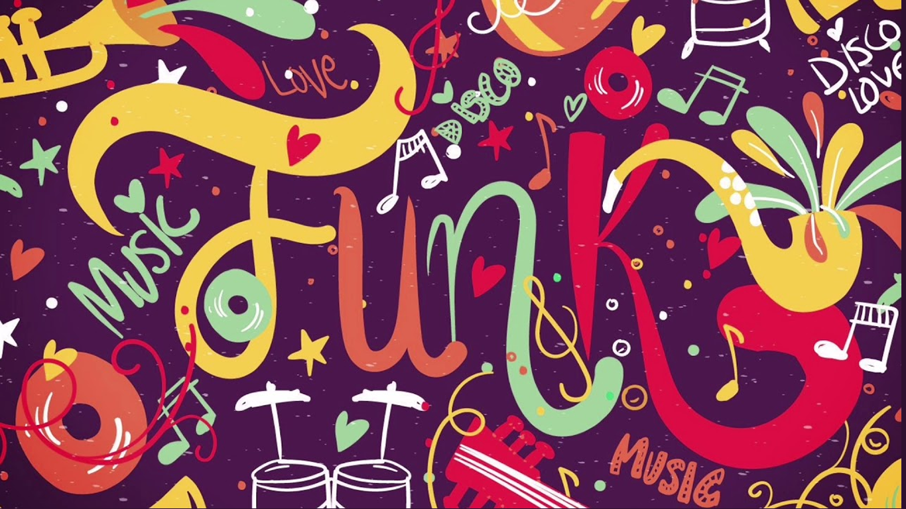

FUNK ROCK
El funk rock es un estilo musical que se caracteriza por la fuerte presencia del bajo, los sencillos riffs de guitarra. Sus más importantes exponentes son grupos como Red Hot Chili Peppers, Rage Against The Machine y Jane's Addiction. Este estilo proviene de la música afroamericana y sus pioneros fueron Parliament, Funkadelic, George Clinton (manager de los anteriores grupos y primer manager de Red Hot Chili Peppers y Sly & The Family Stone entre muchos otros).
Este estilo se caracteriza por la fusión de elementos del Funk con el Rock moderno, porque a diferencia de otros grupos como Jamiroquai quienes han mantenido en su práctica totalidad su estilo Funk estos grupos lo han adaptado de manera muy efectiva a la música moderna. Varios grupos han dedicado canciones a este estilo, entre ellos Rage Against the Machine con su versión del "Renegades of Funk" original de Afrika Bambaataa, con la cual conmemoran a los grupos que influenciaron este estilo.
Los instrumentos más utilizados en este son: guitarra eléctrica, bajos, batería. Este género es influenciado por el rock psicodélico y la incorporación de sonidos electrónicos.
